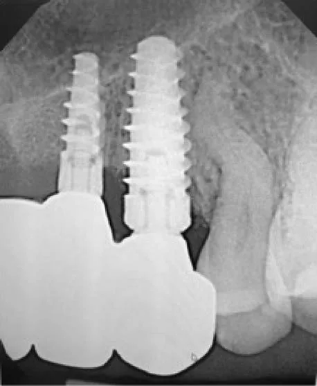
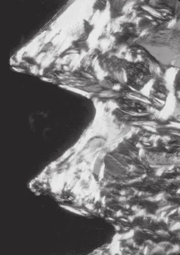

نسخه استخراجشده؛ ترجمه یا تأیید علمی انجام نشده است. وضعیت: captured
تصمیم بارگذاری فوری، برخلاف بسیاری از تصمیمهای جراحی، آستانههای عددی دارد. دو ابزار و دو بازه:
۱. تورک درج. نشان داده شده که برای یک پروتکل بارگذاری فوری موفق، تورک درج باید میان ۳۵ تا ۴۵ نیوتنسانتیمتر باشد.
به بازه بودنش دقت کن: هم کف دارد و هم سقف. تورک بیش از حد بالا یعنی فشردگی بیشازحد استخوان — همان چیزی که در یونیت ۱۱ دیدی به تحلیل کرستال میانجامد.
۲. آنالیز فرکانس رزونانس (RFA). ابزاری تشخیصی که پایداری ایمپلنت را بهعنوان تابعی از سفتی رابط استخوان-ایمپلنت میسنجد، بر پایهی تحریک پیوستهی رابط با آنالیز ارتعاش دینامیک (اثر پیزو).
اعداد ISQ: مقادیر کمتر از ۴۵ نشانهی شکست ایمپلنت است، در حالی که ۶۰ تا ۷۰ نشانهی موفقیت. برای خودِ بارگذاری فوری آستانهی سختگیرانهتری پیشنهاد شده است: ISQ حدود ۷۰ یا بیشتر.
و ارزش دوم RFA: این روش اندازهگیری کمّی و تکرارپذیر میدهد — نه فقط برای تصمیم بارگذاری فوری، بلکه برای تأیید اینتگریشن و پیگیری و پیشبینی شکست ایمپلنت.

یک یافتهی زمانی که برداشت اشتباه از ISQ را تصحیح میکند:
مقادیر ISQ در سه هفتهی اول پس از کاشت کاهش مییابد؛ سپس بازگشت به مقادیر اولیه تقریباً در هشت هفته پس از جراحی دیده میشود.
این یعنی منحنی ISQ V شکل است: بالا در لحظهی کاشت (پایداری مکانیکی)، افت در هفتههای اول (بازجذب استخوان اطراف)، و بازگشت تا هفتهی هشتم (پایداری بیولوژیک).
و پیامدهای عملیاش دو تاست. یکم: یک عدد ISQ پایین در هفتهی سوم لزوماً نشانهی شکست نیست — ممکن است کف طبیعی منحنی باشد. دوم و مهمتر: اگر بارگذاری فوری انجام دادهای، ایمپلنت دقیقاً در همان پنجرهی افت زیر بار است. برای همین است که تورک درج بالا در لحظهی کاشت اینقدر اهمیت دارد — باید ذخیرهی کافی برای عبور از آن دره وجود داشته باشد.
پروویژنال بارگذاریشده یا غیرعملکردی. این تمایز را از درس قبل به یاد بیاور: قرار دادن ترمیم موقت لزوماً به معنای بارگذاری آن نیست. پروویژنال غیرعملکردی بافت نرم را شکل میدهد بدون اینکه نیروی اکلوزال به ایمپلنت وارد کند — و در موارد مرزی، همین گزینهی میانی راهحل است.
اصل بستن بدون فشار. اگر امکانش باشد، پروویژنال ثابت یا پروتز بدون فشار برای ترمیم موفق ایدهآل است. یعنی حتی وقتی چیزی روی ایمپلنت هست، هدف حذف فشار است نه صرفاً پر کردن فضا.
